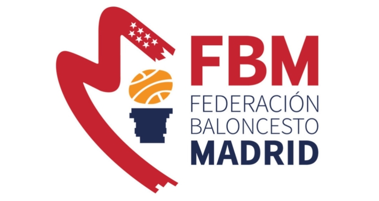

Soy Iván Sánchez, estudiante de Ingeniería de Sistemas de Información. Actualmente estoy cursando el último año de mi grado. Anteriormente, he estado trabajando al mismo tiempo que estudiaba. A continuación, verás toda mi información sobre mis estudios y mi experiencia laboral. Estoy disponible para cualquier pregunta o propuesta.
| NOMBRE | TÍTULO | FECHA | IMAGEN |
|---|---|---|---|
| CÁMARA DE COMERCIO DE MADRID | DESARROLLO DE APLICACIONES MULTIPLATAFORMA | 01/10/2017 - 19/06/2019 | |
| UNIVERSIDAD DE ALCALÁ/UNIVERSITY OF ZAGREB | INGENIERÍA DE SISTEMAS DE INFORMACIÓN | 10/09/2019 - Actualidad | |
| UNIVERSITY OF ZAGREB | ERASMUS+ / INGENIERÍA INFORMÁTICA | 15/02/2023 - 31/07/2023 |
| NOMBRE DE LA EMPRESA | PUESTO DE TRABAJO | FECHA | HABILIDADES | IMAGEN |
|---|---|---|---|---|
| INDRA SISTEMAS | BECARIO | 01/03/2019 - 19/06/2019 | MICROSOFT DYNAMICS 365 / JAVASCRIPT / EXCEL / C# | |
| UNIVERSIDAD DE ALCALÁ | INVESTIGADOR | 01/06/2022 - 15/02/2023 | JSON / JAVA / EXCEL / SQL / ACCESS | |
| FEDERACIÓN DE BALONCESTO DE MADRID | ÁRBITRO DE BALONCESTO | 01/09/2017 - Actualidad | DEPORTE / BALONCESTO / EMPATÍA / RUTINA / COMPAÑERISMO |  |

En mi grado he utilizado varios lenguajes de programación, pero como me encanta programar y también he aprendido algunos por mi cuenta, ahora estoy aprendiendo programación web. A lo largo de mis estudios y experiencias, he trabajado con muchos lenguajes, entornos de desarrollo y herramientas. Cada día mejoro y aprendo cosas nuevas.
En mi etapa educativa he estado aprendiendo idiomas. Mi lengua materna es el español, y también tengo un certificado con un nivel oficial B2 en el idioma inglés, que he ido mejorando a lo largo de los años, por lo que considero que tengo un nivel más alto. Finalmente, durante mis años de instituto estudié francés durante dos años en todas las asignaturas (bilingüe) y otros cuatro años como asignatura electiva.
Solo envíame un correo electrónico con el botón de contacto o visita cualquiera de mis redes sociales a continuación. ¡Gracias por leer!
CONTACTAR